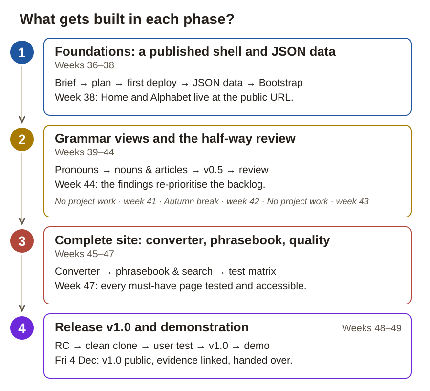

Paper work pack
Present your own language: hand-written HTML, CSS and JavaScript, Bootstrap and data-driven grammar tables
Weeks 36–49 · no project work in weeks 41–43 · handover Fri 4 Dec 2026
This pack is a schedule and a checklist for the moments when the site is not open. The project journal is written on the site and committed to the repository's project-docs folder. A tick in this booklet is not a submission — the work always lives in the Git repository.
The repository is public: no personal data, no school identifiers, no other people's names or faces.
The language material is the author's own. The site shows the credit and the terms of use.
Parlar Ioniano is a public website for Ionian, the language you created. A learner opens it on a phone or a laptop, looks up pronunciation and grammar tables, converts numbers and learns the café dialogue, and every form comes from your reference PDF.

1. Foundations: a published shell and JSON data · weeks 36–38. You turn the brief into a plan and GitHub issues, publish an empty site, and set the pattern every page follows: content in JSON files, one shared loader and a Bootstrap shell. They come first because every later page is built on the publishing path, the data pattern and the navbar.
2. Grammar views and the half-way review · weeks 39–44. You build the Pronouns and the Nouns & Articles pages from data with one reusable render function and tag v0.5 before the break. In week 44 the client's representative and a tester use v0.5, and their findings decide what the last weeks change.
3. Complete site: converter, phrasebook, quality · weeks 45–47. You build the number converter test-first, the phrasebook with its search and the change the client chose in week 44. Then you run the whole test matrix and the accessibility, validation and security passes, so the site is complete and proven before a stranger tries it.
4. Release v1.0 and demonstration · weeks 48–49. A stranger runs the project from your README and an outside tester learns the café dialogue from the site alone. You release v1.0, link every requirement to its work sample and hand over on Friday 4 December.
A work step is one numbered item in this pack and on the site. When a work step changes the site, do each change as a GitHub issue: what to do, a done-when condition, a size estimate and the commit that closes it. Test results go into project-docs/test-matrix.md at once; the weekly summary goes into the project journal at the end of the week.
| Wk | Dates | Week's topic | Phase |
|---|---|---|---|
| 36 | 31 Aug – 4 Sep | Kickoff, toolchain and the first deploy | 1 |
| 37 | 7–11 Sep | Content becomes data: the Alphabet view | 1 |
| 38 | 14–18 Sep | Bootstrap shell and the component decision | 1 |
| 39 | 21–25 Sep | Pronouns: one function, eight tables | 2 |
| 40 | 28 Sep – 2 Oct | Nouns, articles and gender — and v0.5 | 2 |
| 41 | 5–9 Oct | No project work — no project work | – |
| 42 | 12–16 Oct | Autumn break — no project work | – |
| 43 | 19–23 Oct | No project work — no project work | – |
| 44 | 26–30 Oct | Client review and re-plan | 2 |
| 45 | 2–6 Nov | The number converter — built from scratch | 3 |
| 46 | 9–13 Nov | Phrasebook, word cards and search | 3 |
| 47 | 16–20 Nov | Quality and testing week | 3 |
| 48 | 23–27 Nov | Release candidate, user test and v1.0 | 4 |
| 49 | 30 Nov – 4 Dec | Demonstration week | 4 |
Hand in by Fri 4 Dec 2026. The site has the detailed instructions, the implementation help and the project journal.
How this week connects to the whole project: Everything starts from the brief: before the first page exists, you agree with the supervisor what the site must do and what stays out. You set up the tools and publish the still empty site, because a deploy that fails now puts nothing of value at risk. The plan and the must-have issues you write this week are what weeks 37–40 build and what the week-44 review re-plans.
Week goal: Anyone can open your empty site at its public GitHub Pages address, and the must-have pages are planned as GitHub issues.
Work step 1 / 4 · Hold the kickoff talk and record every answer
project-docs/, mark each answer as a decision, an open item or an assumption. People appear only by role.Done when: Every question in the kickoff notes has an answer marked decision, open item or assumption, and the must-have scope (P0) is agreed.
Save your work sample: The kickoff notes with the question list in project-docs/. The open questions and their answers go into the week 36 journal entry.
Work step 2 / 4 · Set up the tools and the public repository
index.html, css/style.css and js/main.js, and the folders data/, tests/ and project-docs/.index.html with Live Server. The address bar must say http://localhost, because fetch() cannot read data files over file://.Done when: index.html opens through http://localhost, the public repository has a README, the privacy check is done and 2FA is on.
Save your work sample: The repository link and the first commit hash go into the week 36 journal entry.
Work step 3 / 4 · Publish the empty site over your phone's hotspot
.nojekyll file in the root.Done when: The public URL opens on your phone and on a device that has never seen the project, and the DevTools console shows no red errors.
Save your work sample: The phone screenshot in project-docs/evidence/week-36/. The network notes and the screenshot link go into the week 36 journal entry.
Work step 4 / 4 · Draft the plan and turn the P0 pages into GitHub issues
project-docs/technical-plan.md.Done when: The plan draft is committed, and every must-have page (P0) has an issue with a done-when condition and a size estimate.
Save your work sample: project-docs/technical-plan.md committed and the issues in the repository. The issue numbers go into the week 36 journal entry.
End-of-week check: The public URL opens on a device that has never seen the project, and another person understands from the README and the plan what is being built and for whom.
Work sample to the Git repository before ticking: Kickoff notes with the question list, the repository with its README, the first deploy live at the public URL, the plan draft, the P0 backlog — and the phone screenshot in project-docs/evidence/week-36/.
How this week connects to the whole project: Week 36 gave you a published but empty site. Now the content moves into data/*.json files that one shared loader fetches at runtime, with your PDF as the source of truth. Every grammar page in weeks 39–46 reuses this pattern, so you get it right once on the Alphabet page.
Week goal: A visitor sees the whole alphabet with its IPA values at the public URL, loaded from data/letters.json and not typed into the HTML.
Work step 1 / 3 · Justify the data store and type the first data from your PDF
data/, fetched at runtime, are the agreed implementation. Justify the agreed choice against at least one alternative, such as tables typed into the HTML.data/words.json yourself. No model knows these values, and every line you type is a line you can verify.Done when: data/letters.json and the first ten records of data/words.json are typed from the PDF, and the plan justifies the agreed data store against at least one alternative.
Save your work sample: The JSON files committed in data/ and the justification in project-docs/technical-plan.md. The PDF pages you typed go into the week 37 journal entry.
Work step 2 / 3 · Build the shared loader and the Alphabet page
js/data.js exports one loadJSON() that calls fetch(), checks response.ok and throws an error message that names the file.alphabet.html loads js/alphabet.js with <script type="module">, so it can import js/data.js without any bundler.data/letters.json for a moment and reload through the local server: your own error message appears. Rename it back.Done when: The Alphabet & Pronunciation page renders from data/letters.json at the public URL, and a renamed file shows your error message instead of a blank page.
Save your work sample: js/data.js and the Alphabet page committed and deployed. The commit links go into the week 37 journal entry.
Work step 3 / 3 · Check the data and prove the check catches an error
tools/check-data.html loops over your data files, checks that every key listed in required exists and is not empty, and prints one line per file.Done when: tools/check-data.html reports "content OK", reports an error when you break one line, and the alphabet table matches the PDF.
Save your work sample: tools/check-data.html committed. What the check caught and its pass/fail report go into the week 37 journal entry.
End-of-week check: The public URL shows the alphabet table rendered from data/letters.json, and tools/check-data.html reports "content OK" — and reports an error when you deliberately break one line.
Work sample to the Git repository before ticking: data/letters.json and data/words.json, js/data.js, the Alphabet page live at the public URL, and the tools/check-data.html report pass/fail in the journal.
How this week connects to the whole project: Weeks 36–37 gave you a published site with one data-driven page. Now Bootstrap gives every page the same navbar and grid, and you measure what it costs on your own pages before you rely on it. From week 39 on, every grammar view is built on these components.
Week goal: A visitor moves between Home and Alphabet with a navbar that works on every page and collapses on a phone, and Home credits you as the author.
Work step 1 / 3 · Write the component-library comparison memo
Done when: project-docs/library-comparison.md covers all three options with your own before-numbers and the supervisor's view, and the plan names your components.
Save your work sample: project-docs/library-comparison.md committed and the decision on the Plan page. The three options and the decision go into the week 38 journal entry.
Work step 2 / 3 · Take Bootstrap into use and build the shared shell
css/style.css, which loads after Bootstrap. You never edit the library file.aria-current="page".Done when: Bootstrap loads from the CDN with a pinned version, the navbar works from every page and collapses on a phone, and Home shows the credit and the terms.
Save your work sample: The pages and css/style.css committed and deployed. Which components you use and where you wrote your own CSS go into the week 38 journal entry.
Work step 3 / 3 · Measure again and record the before/after numbers
Done when: The memo has the before and after numbers side by side and at least one named limit.
Save your work sample: project-docs/library-comparison.md with the before/after pair, committed. Your measurements go into the week 38 journal entry.
End-of-week check: The comparison memo with your own measured numbers is in project-docs/, the navbar works from every page on the public URL and collapses correctly on a phone, and the Home page shows the credit and terms.
Work sample to the Git repository before ticking: The comparison memo with your own measured numbers is in project-docs/, the navbar works from every page on the public URL and collapses correctly on a phone, and the Home page shows the credit and terms.
How this week connects to the whole project: Week 37's pattern now meets the biggest content block in the PDF: eleven pages of pronouns. One reusable renderTable() turns eight datasets into Bootstrap tabs, and the loading and error states become tested behaviour. Week 40 reuses the same function for the articles.
Week goal: A visitor switches between eight pronoun tables in tabs, with the keyboard or on a phone, all rendered from data/grammar.json.
Work step 1 / 3 · Design the pronoun data and type it from the PDF
data/grammar.json with eight sets. Each set has the same four keys: id, title, columns and rows.tools/check-data.html and run it.Done when: data/grammar.json has eight pronoun sets in the same shape, and tools/check-data.html passes.
Save your work sample: data/grammar.json committed. The shape and the PDF pages you typed go into the week 39 journal entry.
Work step 2 / 3 · Write renderTable() and wire the eight tables into tabs
js/render.js exports renderTable({ title, columns, rows, note }), which returns a Bootstrap table element with nothing pronoun-specific inside.pronouns.html, operable with the keyboard alone.table-responsive, so a phone scrolls the table and not the page.Done when: All eight pronoun tables render at the public URL through one renderTable(), the tabs work with the keyboard, and wide tables scroll on a phone.
Save your work sample: js/render.js and the Pronouns page committed. How renderTable() stays generic goes into the week 39 journal entry.
Work step 3 / 3 · Prove the loading and error states with screenshots
project-docs/evidence/week-39/.Done when: Both screenshots show your own states, and the phone check passes.
Save your work sample: The screenshots in project-docs/evidence/week-39/, linked in the week 39 journal entry.
End-of-week check: All eight pronoun tables render on the public URL from data/grammar.json, the tabs can be operated with the keyboard alone, wide tables scroll horizontally on a phone instead of breaking the layout, and renaming the JSON shows your error state.
Work sample to the Git repository before ticking: All eight pronoun tables render on the public URL from data/grammar.json, the tabs can be operated with the keyboard alone, wide tables scroll horizontally on a phone, and renaming the JSON shows your error state.
How this week connects to the whole project: Week 39's renderTable() now meets the articles: every table on PDF pages 8 and 19–21 is the same gender × number matrix, so one function serves them all. With four content pages live, you tag v0.5, the version the client's representative and a tester will use in week 44. This is the last working week before the break, so the review is booked in writing now.
Week goal: A visitor finds which article goes with which gender in an accordion of gender-by-number tables, and v0.5 is tagged and booked for the week-44 review.
Work step 1 / 4 · Model the gender-by-number data and type it from the PDF
data/grammar.json as gender × number, so renderTable() renders definite and indefinite articles and articulated prepositions without special cases.tools/check-data.html and run it.Done when: The nouns and articles sections in data/grammar.json match PDF pages 8 and 19–21, and tools/check-data.html passes.
Save your work sample: data/grammar.json committed. How the gender × number shape drove the data design goes into the week 40 journal entry.
Work step 2 / 4 · Build the Nouns & Articles page with an accordion
Done when: The Nouns & Articles page renders every matrix through renderTable() at the public URL, and the accordion works with the keyboard alone.
Save your work sample: The page committed and deployed. Why the accordion earns its place on a long page goes into the week 40 journal entry.
Work step 3 / 4 · Tag v0.5 and deploy it
git tag v0.5 and git push --tags. The tag pins the exact commit the reviewers will see.Done when: The v0.5 tag is on GitHub and the deployed site matches it.
Save your work sample: The tag in the repository. The tag and what you left for the review to judge go into the week 40 journal entry.
Work step 4 / 4 · Book the week-44 review in writing
project-docs/review-agreement.md with the date, the place, the three tasks and the v0.5 tag. People appear only by role, for example supervisor or tester A.Done when: project-docs/review-agreement.md is committed with the roles, the date, the place and the three tasks.
Save your work sample: project-docs/review-agreement.md committed. The booked review details go into the week 40 journal entry.
End-of-week check: The four grammar pages render correctly on the public URL, the accordion opens and closes with the keyboard alone, v0.5 is tagged, and the review agreement (roles + date) is committed in project-docs/.
Work sample to the Git repository before ticking: The four grammar pages render correctly on the public URL, the accordion opens and closes with the keyboard alone, v0.5 is tagged, and the review agreement (roles + date) is committed in project-docs/.
How this week connects to the whole project: v0.5, tagged before the break, now meets other people: the client's representative and a tester who has never seen Ionian use it at the public URL. Their findings, recorded in their own words, become the issues and priorities for weeks 45–47, and the first debugging chain starts from a real finding.
Week goal: The client's representative and a tester have used v0.5 without your help, and every finding has a decision and, if accepted, a GitHub issue.
Work step 1 / 4 · Run the review and record the findings verbatim
project-docs/review-2026-w44.md while the words are still fresh.Done when: project-docs/review-2026-w44.md separates the tester's words from your interpretation, and every finding has a decision.
Save your work sample: project-docs/review-2026-w44.md committed. The three most surprising findings in the tester's words, with the tester's role and the date, go into the week 44 journal entry.
Work step 2 / 4 · Turn the decisions into issues and re-plan the backlog
Done when: Every accepted finding is an issue with a done-when condition, the backlog is re-prioritised, and the estimate-versus-actual difference is written down.
Save your work sample: The issues in the repository. What you re-prioritised and why, and the estimate comparison, go into the week 44 journal entry.
Work step 3 / 4 · Fix a small batch and write debugging chain 1/3
project-docs/test-matrix.md, so the bug cannot come back unnoticed.Done when: Chain 1/3 in project-docs/debugging-chains.md runs from the tester's words to a regression test, with the fix commit linked.
Save your work sample: project-docs/debugging-chains.md and the regression test row in project-docs/test-matrix.md, committed. The chain links go into the week 44 journal entry.
Work step 4 / 4 · Check the device-security open item with the supervisor
project-docs/technical-plan.md.Done when: The plan's device-security item shows the supervisor's answer or is still marked open, and the plan is committed.
Save your work sample: project-docs/technical-plan.md committed. The answer, or that it is still open, goes into the week 44 journal entry.
End-of-week check: The review log is committed with the two voices clearly separated, every finding has a decision (fix / won't fix / P2), and chain 1/3 is complete from a real finding, with its regression test in the matrix.
Work sample to the Git repository before ticking: project-docs/review-2026-w44.md with the two voices separated, the updated backlog, the fix commits, and chain 1 in debugging-chains.md.
How this week connects to the whole project: Every page so far renders data; this one computes. Your rule list from PDF pages 42–45 becomes tests first, then small pure functions and a converter built without Bootstrap components. The change the client chose in week 44 ships in the same deploy from a short feature branch.
Week goal: A visitor types 319 into the converter and gets "Trecentodecenove", computed by pure functions that tests check against the PDF.
Work step 1 / 3 · Write the converter tests first, from the PDF
tests/tests.html and tests/numbers.test.js from the implementation help: a small test runner of your own, with no framework and nothing to install.tests/tests.html through the local server: every test fails. Commit now. This commit proves that the tests came first.Done when: tests/numbers.test.js has at least 6 converter tests whose names cite PDF pages, and a commit shows them all red before the implementation.
Save your work sample: The all-red commit and tests/numbers.test.js. The test-first evidence goes into the week 45 journal entry.
Work step 2 / 3 · Implement the converter as small pure functions
data/numbers.json from the PDF: the cardinals, the ordinals and the paragoge and apocope rules, as data where possible.js/numbers.js is an ES module that exports numberToIonian() and the ordinal helpers. Units, tens, hundreds and thousands are each their own function. No DOM, no fetch.project-docs/debugging-chains.md. If not, note that chain 2 comes from week 46.tests/tests.html reports 0 failed. Break one rule on purpose, watch the right test go red, and undo.Done when: tests/tests.html reports 0 failed, and js/numbers.js contains no DOM or fetch code.
Save your work sample: js/numbers.js and data/numbers.json, committed test by test. The function breakdown and the two hardest rules go into the week 45 journal entry.
Work step 3 / 3 · Build the converter UI by hand and ship the feedback change
aria-live="polite", and your own CSS. No Bootstrap components in this one view.Done when: On the public URL at least 0–999 999 converts correctly, junk input gets a clear message, and the feedback change is live and linked to its finding.
Save your work sample: The Numbers page and the merge commit. The feedback-change link goes into the week 45 journal entry.
End-of-week check: On the public URL, at least 0–999 999 converts correctly including the separation and clipping rules, tests/tests.html reports 0 failed with at least 6 converter tests whose names cite PDF pages, and the feedback change is live.
Work sample to the Git repository before ticking: tests/numbers.test.js with PDF-cited expectations, js/numbers.js, the Numbers page live, and the feedback-change commit linked to its finding.
How this week connects to the whole project: Week 37's four-key word shape and the shared loader now feed the page the external tester will use in week 48: the word cards, the café dialogue and a search. The search is the first place where a visitor's input meets your rendering, so you build it to be safe. With the feature list closed, the test matrix you plan now is what week 47 runs.
Week goal: A beginner types "thank" into the phrasebook search and finds the "thank you" card, and switches the café dialogue between Ionian and English.
Work step 1 / 4 · Finish the word and phrase data from the PDF
data/words.json in the week-37 four-key shape.data/phrases.json as ordered turns, each with its speaker.tools/check-data.html and run it.Done when: Both files match the PDF, pages 57–58 say "coming later", and tools/check-data.html passes.
Save your work sample: data/words.json and data/phrases.json committed. The "coming later" decision goes into the week 46 journal entry.
Work step 2 / 4 · Build the word cards and the dialogue viewer
row row-cols-1 row-cols-md-3 g-3: three columns on a laptop, one on a phone.Done when: On the public URL the cards drop to one column on a phone, and the dialogue switches between Ionian and English.
Save your work sample: The Phrasebook page committed and deployed, linked in the week 46 journal entry.
Work step 3 / 4 · Build the search and prove it cannot be tricked
aria-live="polite", so it is announced and not just seen.<img src=x onerror=alert(1)> into the search on the public URL: it shows as plain text and no dialog opens.project-docs/evidence/week-46/.Done when: Typing "thank" finds the "thank you" card with a live match count, and the attack string renders as harmless text.
Save your work sample: The screenshot in project-docs/evidence/week-46/. How the filter works and why textContent is safe go into the week 46 journal entry.
Work step 4 / 4 · Plan the whole test matrix and commit the licence files
project-docs/test-matrix.md, about a third each for normal use, limits and error cases, with the expected result written first.Done when: The test matrix has at least 12 cases with the expected results filled in, LICENSE and CREDITS are committed, and chain 2/3 is written up.
Save your work sample: project-docs/test-matrix.md, LICENSE and CREDITS committed. The state of chain 2/3 goes into the week 46 journal entry.
End-of-week check: A beginner can find 'thank you' by typing 'thank' on the public URL, the cards filter as you type with a live match count, the dialogues toggle between languages, searching for the T10 attack string (the img-onerror line in the test matrix) renders as harmless text, and the full test matrix (at least 12 cases) exists with the expected results filled in.
Work sample to the Git repository before ticking: The Phrasebook live with the card grid and search, the XSS screenshot, the full test matrix with expected results filled in, and the LICENSE/CREDITS commits.
How this week connects to the whole project: Every must-have page now exists; this week proves that the site holds. The test matrix planned in week 46 gets its observed results, the third debugging chain comes from a real failure, and the accessibility, validation and security passes make the site ready for an outside tester in week 48.
Week goal: A learner can use every page with the keyboard alone, every page validates, and every test case in the matrix has a recorded, dated result.
Work step 1 / 4 · Run the whole test matrix against the public URL
project-docs/test-matrix.md against the public URL, not against your local copy.tests/tests.html and tools/check-data.html are both green on main.Done when: Every row has an observed result and a date, the failures are marked, and both test pages are green on main.
Save your work sample: project-docs/test-matrix.md committed. The failures the matrix caught go into the week 47 journal entry.
Work step 2 / 4 · Complete debugging chain 3/3 and compile all three
project-docs/debugging-chains.md in the same format, with no gaps.Done when: project-docs/debugging-chains.md has three complete chains in the same format, each ending in a regression test in the matrix.
Save your work sample: project-docs/debugging-chains.md committed. The chain 3/3 links go into the week 47 journal entry.
Work step 3 / 4 · Audit accessibility and validate every page
project-docs/lighthouse/.project-docs/html-validation.md before you fix them.Done when: Every page has a Lighthouse before/after pair and passes the W3C HTML validator without errors.
Save your work sample: project-docs/lighthouse/ and project-docs/html-validation.md committed. The Lighthouse pairs and what the validator found go into the week 47 journal entry.
Work step 4 / 4 · Review what you load, then refactor with the tests green
project-docs/security-review.md.tests/tests.html between commits. If a test goes red, stop until it is green.Done when: project-docs/security-review.md lists every external file with its version, no secrets are found, and the refactor commits have green tests in between.
Save your work sample: project-docs/security-review.md and the refactor commit series. What the refactor changed structurally goes into the week 47 journal entry.
End-of-week check: The matrix has every row filled with observed results and dates, three complete chains are in debugging-chains.md, the after-Lighthouse accessibility score is recorded next to its before-pair, every page validates without errors, and tests/tests.html plus tools/check-data.html are both green on main.
Work sample to the Git repository before ticking: The executed test matrix, debugging-chains.md with three complete chains, the Lighthouse pairs in project-docs/lighthouse/, html-validation.md and security-review.md, and the refactor commit series.
How this week connects to the whole project: The site is complete and tested; now it meets a clean environment and a person who owes you nothing. A fresh clone tests your README and an outside tester tests the phrasebook, and what they stumble on you fix before v1.0. The released version and its linked evidence are what week 49 demonstrates.
Week goal: A stranger gets the project running from your README alone, and an outside tester learns the café dialogue from v1.0 without your help.
Work step 1 / 4 · Freeze the content and tag the release candidate (RC)
project-docs/release-notes-v1.0.md.v1.0-rc1, and push the tag.Done when: The release candidate tag is pushed, and the public URL serves it with a clean console.
Save your work sample: The RC tag in the repository, linked in the week 48 journal entry.
Work step 2 / 4 · Run the project from a fresh clone with the README only
git clone on a machine or an account that has never run the project.python3 -m http.server.Done when: The fresh clone runs with the README steps only.
Save your work sample: The clean-clone notes and the README fix commits. The clean-environment result goes into the week 48 journal entry.
Work step 3 / 4 · Run the user test with one written task
project-docs/user-test-2026-w48.md, the tester's words verbatim on one side and your interpretation on the other, with the role and the date.Done when: The tester reached and read the café dialogue using only the site and your written instructions, and every hesitation has a fix.
Save your work sample: project-docs/user-test-2026-w48.md and the fix commits. The tester's words and the fixes they produced go into the week 48 journal entry.
Work step 4 / 4 · Describe the deployment path and release v1.0
project-docs/deployment-path.md, show localhost → your phone's hotspot, a local area network (LAN) → GitHub Pages over HTTPS, with your own screenshots such as the week-36 phone screenshot.git tag v1.0 and git push --tags.project-docs/evidence-matrix.md: one row per requirement with its code, the work-sample link and the week. Fill in the rows whose work samples already exist.Done when: v1.0 is tagged, released and live at the public URL, deployment-path.md uses your own screenshots, and evidence-matrix.md exists.
Save your work sample: project-docs/deployment-path.md, project-docs/release-notes-v1.0.md, project-docs/evidence-matrix.md and the v1.0 release. The release link goes into the week 48 journal entry.
End-of-week check: The tester reached and read the café dialogue using only the site and your written instructions — no spoken help; the fresh clone runs with the README steps only; v1.0 is tagged, released and live at the public URL.
Work sample to the Git repository before ticking: The clean-clone notes, user-test-2026-w48.md, deployment-path.md, the instruction-fix commits, the v1.0 release and the started project-docs/evidence-matrix.md.
How this week connects to the whole project: Nothing new is built: your work samples have grown week by week since week 36. This week you link each of the 44 requirements to its exact work sample, close the journal and rehearse the demo, so an assessor finds every sample in seconds rather than minutes.
Week goal: An assessor reaches the work sample for any of the 44 requirements in seconds, and your 8–10 minute demo is rehearsed and handed over on Friday 4 December.
Work step 1 / 3 · Link all 44 requirements to their exact work samples
project-docs/evidence-matrix.md its requirement code, the exact work-sample link and the week.Done when: All 44 rows in project-docs/evidence-matrix.md have a working, exact link.
Save your work sample: project-docs/evidence-matrix.md committed. The final commit hash goes into the week 49 journal entry.
Work step 2 / 3 · Commit the journal and AI log, and write the self-assessment
project-docs/project-journal.md and project-docs/AI-log.md.project-docs/.Done when: The journal covers all 11 weeks, the AI log is committed with every entry verified, and the self-assessment is committed.
Save your work sample: project-docs/project-journal.md, project-docs/AI-log.md and the self-assessment in project-docs/. What it says about your weakest and strongest requirement goes into the week 49 journal entry.
Work step 3 / 3 · Rehearse the demo twice and hand over on Friday
tests/tests.html, the comparison memo and the evidence matrix.Done when: The demo ran inside 10 minutes in both rehearsals, and the handover package is delivered on Friday 4 December.
Save your work sample: The demo structure with its timings goes into the week 49 journal entry.
End-of-week check: Every row in project-docs/evidence-matrix.md has a working link, the journal covers all 11 weeks, the demo ran inside 10 minutes in rehearsal, and the handover package is complete on Friday.
Work sample to the Git repository before ticking: project-docs/evidence-matrix.md fully linked, project-docs with the final journal, AI log and self-assessment, and the handover confirmation.
Mon 30 Nov · Content freeze — the last accepted version
Tue 1 Dec · Evidence: journal, tests and matrix links
Wed 2 Dec · Rehearse the 8–10 min demo and the self-assessment
Thu 3 Dec · Buffer — final check with another person
Fri 4 Dec · Demonstration and handover
The identifiers and technical terms of this project in the order you meet them. Each one is also explained on the site where it first comes up.
| work step week 36 | One numbered item in this site's weekly guide, for example "Work step 2 / 4". A work step is not a GitHub issue: one work step can need several issues, and some work steps (a review, a test run) need none. |
| repository | Repo. The project folder whose whole history Git stores. Your site lives here, and the public copy on GitHub is what GitHub Pages serves. |
| commit | One named, saved change in the repository's history. A commit is the smallest work sample you can point an assessor at. |
| issue | GitHub issue. A numbered card in the repository for one change to the site, with its own description, done-when condition and size estimate. The commit that finishes the change closes it. One work step on this site can need several issues. |
| branch | A named line of commits. This project publishes from the main branch and uses a short feature branch for the week-45 feedback change. |
| JSON | JavaScript Object Notation. A plain-text format for structured data. Every grammar table on this site is stored as JSON under data/ and read while the page is running. |
| fetch() | The browser call that loads a file — here a JSON file — while the page is open. It works only over http://, which is why the site is always opened through a local web server. |
| unit test | A small automated check that runs one of your functions and compares the result with the value you wrote down beforehand. This project's unit tests run in the browser from tests/tests.html. |
| CDN | Content delivery network. A public server that hosts a library's files, so you link to them instead of copying them into your repository. Bootstrap, the icons and the fonts are loaded this way, each with a pinned version. |
| bundler | A tool that packs many source files into one file for the browser. This project has none: the files you write are exactly the files that go live. |
| URL | Web address. The address a page is opened from. "The public URL" in these instructions always means your GitHub Pages address — the one anyone can open. |
| SVG | Scalable Vector Graphics. An image written as text and drawn from shapes, so it stays sharp at any size. The flag and column motif are drawn as your own SVG. |
| P0 | Must-have core. The pages and features that have to be finished before anything else is started. Here: Home, Alphabet, Pronouns, Nouns & Articles, Numbers with the converter, and the Phrasebook. |
| P1 | Important follow-up. Work that is started only once every P0 item works. Here: the Verbs overview, and only if P0 is complete by the end of week 46. |
| P2 | Optional extra. Work that may be dropped without failing the project. Here: word-building. |
| XSS | Cross-site scripting. An attack where text a visitor types is rendered as code by the page. Building every element with textContent instead of innerHTML is what stops it here. |
| deploy week 36 | Publishing the current version to the public address. In this project a deploy is a push to the main branch, which GitHub Pages then serves. |
| 2FA week 36 | Two-factor authentication. A second step on top of the password when you sign in to GitHub. Switched on in week 36 and part of the device-security evidence. |
| backlog week 36 | The ordered list of everything still to do, kept as issues and sorted P0 first. It is re-prioritised after the week-44 review. |
| API week 37 | Application programming interface. The set of functions one piece of software offers another. The Fetch API is the browser's own interface for loading files; this project talks to no external service. |
| DOM week 37 | Document Object Model. The browser's live tree of everything on the page. Your JavaScript renders the grammar tables by creating DOM elements, not by writing HTML strings. |
| IPA week 37 | International Phonetic Alphabet. The standard symbols for speech sounds, written in square brackets. Every letter's IPA value is typed from the reference PDF and checked against it. |
| tag week 40 | Git tag. A permanent name pinned to one exact commit, such as v0.5 or v1.0. A tag is how you can still show an assessor precisely what the reviewers saw. |
| T01 week 44 | Test case identifier. T means test case, and the number is its row in the test matrix project-docs/test-matrix.md: T01 is the first, T02 the second. A unit test in tests/ carries the number of its row in its name. The expected result is written down before the test is run. |
| regression test week 44 | A test added after a bug is fixed, so the same bug cannot come back unnoticed. Every debugging chain in this project ends in one. |
| UI week 45 | User interface. The part of the site a visitor sees and operates: the input, the button, the result text. The number converter's UI is built by hand, without Bootstrap components. |
| refactor week 47 | Improving the structure of working code without changing what it does — renaming, extracting, deleting. The unit tests are what make it safe. |
| RC week 48 | Release candidate. A version finished enough to be tested as if it were the release. RC1 is the first one; only blocking fixes go in after it. |
| LAN week 48 | Local area network. The network your own devices share, for example your phone's hotspot. The deployment path runs localhost → LAN → GitHub Pages over HTTPS. |
Tick only when the requirement has an exact work sample: a link, a commit, a screenshot, a test row or a memo. The same work sample can serve several requirements. Requirement names are shown in Finnish exactly as in the national qualification criteria (ePerusteet).
☐ Palveluasenne – How you receive and act on feedback in the review and the user test (wk 44, 48).
☐ Asiakkaiden palvelu – Kickoff and review with the client role: the question list and the recorded answers (wk 36, 44).
☐ Tarpeen varmistaminen – The needs analysis and the justified solution proposal in the plan (wk 36).
☐ Palautteen pyytäminen – The feedback request in the review; the self-assessment in the demonstration week (wk 44, 49).
☐ Viestintäkanavat – GitHub issues and the agreed channels in use for the whole project (wk 36 onwards).
☐ Alan perussanasto – The comparison memo: field vocabulary and the library options with their trends (wk 38).
☐ Englanninkielinen materiaali – English documentation sources cited in the journal and the AI log (wk 37–39).
☐ Tiedonhaku ongelmissa – The information trail inside the debugging chains (wk 44–47).
☐ Käyttöjärjestelmät – The development environment set up: operating-system tools, VS Code, a local web server, Git (wk 36).
☐ Verkkoyhteyden jako – Your phone's connection shared to the computer by hotspot and the first deploy published over it, with the security notes (wk 36).
☐ Verkon perusrakenne – The deployment-path description from your own artefacts: localhost → LAN → Pages/HTTPS (wk 48).
☐ Laitteiden suojaus – Partial: environment hardening (wk 36), the checkpoint (wk 44) and the dependency audit (wk 47); the rest is an open item owned by the supervisor.
☐ Kehitysympäristö – VS Code, Live Server and browser DevTools in use; the first commit and deploy (wk 36).
☐ Virheiden korjaus – Three complete debugging chains, observation to regression test (wk 44–47).
☐ Toimintojen testaus – The converter unit tests in tests/tests.html and the executed test matrix (wk 45, 47).
☐ Rakenteinen ohjelmointi – The converter's pure functions and ES-module split in js/numbers.js (wk 45).
☐ Ylläpidettävä koodi – The refactor series with green tests, naming and HTML validation (wk 47).
☐ Käyttöliittymän toteutus – The pages built from the site map: Home, Alphabet, Pronouns, Nouns & Articles (wk 38–40).
☐ Toimintojen toteutus – The converter and the search, from issue to done-when condition (wk 45–46).
☐ Tehtävistä sopiminen – The weekly agreements with the supervisor and the issue assignments (wk 36, 44).
☐ Ratkaisujen etsiminen yhdessä – The library options discussed together; the review solutions agreed together (wk 38, 44).
☐ Toimivuuden arviointi – The solutions evaluated in the review, with the recorded decisions (wk 44).
☐ Oman toiminnan arviointi – The self-assessment and the journal's weekly reflections (wk 49).
☐ Asiakkaan tarpeet – The kickoff: needs recorded as decisions, open items and assumptions (wk 36).
☐ Asiakaslähtöinen viestintä – A technical matter explained in plain language in the review and test memos (wk 44, 48).
☐ Version katselmointi – The v0.5 review with a decision for every finding (wk 44).
☐ Tärkeysjärjestys – The P0/P1/P2 backlog with justifications (wk 36).
☐ Tehtäviksi jako – The views split into issues with done-when conditions (wk 36).
☐ Toteutuksen suunnittelu ja arviointi – The size estimates and the estimate-vs-actual comparison in the re-plan (wk 36, 44).
☐ Toimintalogiikka – The converter logic and the search (wk 45–46).
☐ Tietovaraston valinta – The JSON-files-in-data/ + runtime-fetch decision with the rejected alternatives (wk 37).
☐ Yhteys tietovarastoon – Fetch with loading and error states, implemented and tested (wk 37, 39).
☐ Rajapinnat ja tiedon käsittely – The Fetch API plus the data transforms: grouping, filtering, search (wk 39, 46).
☐ Tietoturvan arviointi – The textContent XSS proof, the CDN dependency review and the no-secrets check (wk 46–47).
☐ Versionhallinta – The commit history, the v0.5 and v1.0 tags and the branches (wk 36–49).
☐ Osan liittäminen versioon – The feedback change merged into the existing version from a feature branch (wk 45–46).
☐ Julkaisu tuotantoon – The first deploy from the main branch and the v1.0 release on GitHub Pages (wk 36, 48).
☐ Kehittämisympäristön käyttöönotto – The environment set up, and Bootstrap taken into use from the CDN and configured in css/style.css (wk 36, 38).
☐ Mahdollisuudet ja rajoitteet – The comparison memo naming Bootstrap's possibilities and limits with your own measurements (wk 38).
☐ Toiminnot ja työkalut – The navbar, grid, tables, tabs and accordion built on Bootstrap's components (wk 39–40).
☐ Ulkoiset komponentit – External components loaded from a CDN with pinned versions: Bootstrap CSS and JS, the icons, the fonts (wk 38).
☐ Toteutus kirjastolla – The pages designed, implemented and tested with Bootstrap (wk 39–46).
☐ Julkaisu asiakkaalle – Published to the client's environment: GitHub Pages, the public URL (wk 48).
☐ Dokumentointi – The README and the user documentation in the agreed form (wk 48).
Remember: the ticks and text fields on the site are stored only in your browser. They do not reach the teacher and they never replace the work in Git.